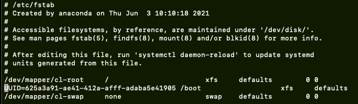
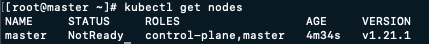
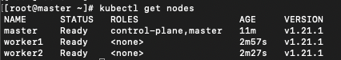

[ Kubernetes ]
쿠버네티스 환경 구축, CentOs 8 설치
1. 쿠버네티스
쿠버네티스란 컨테이너 런타임을 통해 컨테이너를 다루는 도구를 말한다.
쿠버네티스가 해 주는 일은 여러 서버(노드)에 컨테이너를 분산해서 배치하거나,
문제가 생긴 컨테이너를 교체하거나, 컨테이너가 사용할 비밀번호나 환경 설정을 관리하고 주입해 주는 일 등이 있다.
도커, 쿠버네티스 뭐가 다른가?
2. 쿠버네티스 설치 환경
[1] 개발 용도의 쿠버네티스
- Minikube
- Docker for Windows에 내장
* 로컬 환경에서 스탠드 얼론 방식으로 동작, 마스터와 노드가 동일한 호스트에 실행,
기본 작동 방식을 이해 하기 유리하지만, 실제 환경에 적용하기 적절치 못함
[2] 서비스 테스트 | 운영 용도의 쿠버네티스
kuberspray (자체 서버)
kubeadm (자체 서버)
EKS,GEK (퍼블릭 클라우드 이용)
쿠버네티스 클러스터 : 하나의 마스터와 최소 두 개 이상의 노드로 구성, 각각 별도의 시스템에서 구동, 필요할 때마다 노드를 추가해 용량을 늘려야하는 실제 환경에서의 구성 방식
3. Centos 8에 설치 진행
1) 방화벽 설정
[master, worker1, worker2] 세 대 다 진행.
2) 호스트 이름 설정
위 파일 내용을
각 노드 별 이름에 맞게 설정한다.
위 파일 내용을 아래와 같이 수정한다.
3) 도커 설치 [master, worker1, worker2] 세 대 다 진행.
3) 도커 설치
4) k8s 설치 [master, worker1, worker2] 세 대 다 진행.
4) k8s 설치
방화벽 설정 추가.
Update Iptables Settings
iptable 설정.
💡 net.bridge.bridge-nf-call-iptables = 1 의 의미 :
centOS와 같은 리눅스 배포판은 net.bridge.bridge-nf-call-iptables의 default값이 0이다.
이는 bridge 네트워크를 통해 송수신 되는 패킷이 iptable 설정을 우회한다는 의미.
하지만 컨테이너의 네트워크 패킷이 호스트머신의 iptable 설정에 따라 제어되도록 하는 것이 바람직하며, 이를 위해서는 값을 1로 설정해야한다.
5) k8s swap 설정 [master, worker1, worker2] 세 대 다 진행.
5) k8s swap 설정
kubelet이 제대로 동작하기 위해 SWAP을 disable 시켜준다.
재부팅하면 다시 스왑이 올라온다.
/etc/fstab 파일에 재부팅 시 자동으로 마운하게 설정되어있기 때문.

그래서 이 부분을 주석처리하여 인식이 안되도록 한다.
6) 마스터 설정
[ master ]
조금 기다리면 아래와 같은 결과가 나온다.
토큰 값은 이따 필요하니 잘 저장해 둔다.
아래 명령어로 마스터 설정을 확인한다.

calico.yaml 을 받아서 수정한다.
위 파일에서 아래 부분을 찾는다.
보면 #주석과 띄어쓰기 한 칸이 있는데
주석, 띄어쓰기를 지워준다.
7) 워커 설정 :: Node join
[ worker1, worker2 에서 진행 ]
위에서 Master를 초기화시킬때 복사해둔 kubeadm join~을 사용할 차례.
복사한 명령어를 각 노드로 가서 입력한다.
결과가 성공적으로 join 했다는 메시지가 뜨면, 다시 마스터 노드로 가서 확인한다.
[Join 확인]

마스터 하나에 노드 두 개로 클러스터 구성된 것을 볼 수 있다.
* 한 2분 넘게 기다려도 Ready가 뜨지 않는다면 아래 에러기록.2 를 참고해서 재설정 요망..ㅠㅠ
클러스터가 구성이 되었으니 간단한 예제를 하나 실행해보자 !
다음 포스팅 링크 :
🏄🏻♀️ Cluster test
[ Kubernetes ] 쿠버네티스 Cluster test - pod, deplotment 생성 Cluster test 클러스터가 구성이 되었...
blog.naver.com
☹️ 쿠버네티스 설치 중 에러 기록
1)
https://zunoxi.tistory.com/43
개요 쿠버네티스 Unable to connect to the server x509 에러 kubernetes x509 에러 쿠버네티스 클러스터 설치를 성공적으로 진행하던중 갑자기 노드들의 상태 확인이 불가한 딥빡의 상황이 펼쳐졌다.🤨 해결과정..
zunoxi.tistory.com
2)
원인은 모르겠다..
마스터설정시 복사해 두었던 토큰 값을 잘못써주었던 탓이려나ㅠ